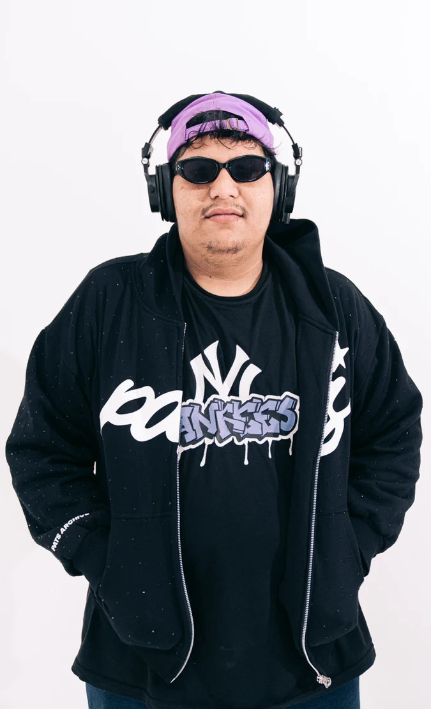
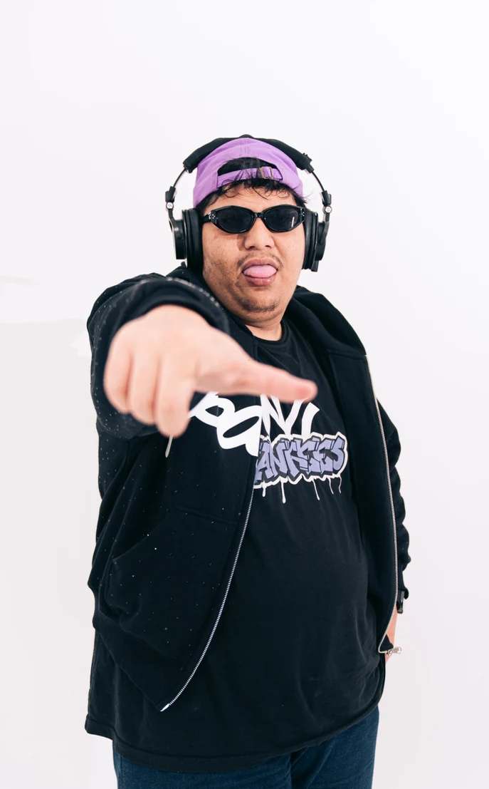

Identity, positioning, and core artist facts. Identitas, positioning, dan fakta utama artis.

OFFICIAL PORTRAIT / 2026
MUSIC WITHOUT UNNECESSARY BOUNDARIES.
Artist name
JXXZY
Pronunciation
Jexsiii
Origin
Indonesia
Format
Solo DJ Performance
Tagline
Fun. Fly. Enjoy.
Core
Electronic / Global Club
02 / ABOUT JXXZY · ID
JXXZY adalah DJ, producer, dan music editor asal Indonesia dengan identitas set yang berenergi tinggi, fleksibel, dan berorientasi pada dancefloor. Ia tidak membatasi performanya pada satu genre. Dutch, Jungle Dutch, Breakbeat, Breakfunk, Techno, Indonesian Bounce, Baile Funk, Brazilian Funk, Bolha, dan berbagai crossover club sound dirangkai sebagai perjalanan energi yang terus berkembang. Personal edits, mashups, bootlegs, reworks, dan DJ tools menjadi bagian penting dari karakter live JXXZY.
EN / ABOUT
JXXZY is an Indonesia-based DJ, producer, and music editor with a high-energy, flexible, dancefloor-focused identity. His performances are not restricted to one genre. Dutch, Jungle Dutch, Breakbeat, Breakfunk, Techno, Indonesian Bounce, Baile Funk, Brazilian Funk, Bolha, and other crossover club sounds are shaped into an evolving energy journey. Personal edits, mashups, bootlegs, reworks, and DJ tools are central to the JXXZY live experience.
ARTIST STATEMENT
Different rhythms. Different cultures. One dancefloor.
Ritme berbeda. Budaya berbeda. Satu dancefloor.
03 / SOUND MAP
NINE ROUTES. ONE DANCEFLOOR.
Core genres, crossover direction, and set vocabulary. Peta musik dan arah crossover.
01
Dutch
Energi club dengan bounce kuat.
Bounce-driven club energy.02
Jungle Dutch
Gerak perkusif dan tribal.
Percussive and tribal movement.03
Breakbeat
Ritme patah dan momentum bass.
Broken rhythm and bass momentum.04
Breakfunk
Breakbeat dengan funk dan bounce playful.
Breakbeat with funk and playful bounce.05
Techno
Tekanan, drive, dan tensi peak.
Pressure, drive, and peak tension.06
Indonesian Bounce
Karakter lokal dengan energi club.
Local recognition with club energy.07
Baile Funk
Perkusi Brasil, vokal, dan bass raw.
Brazilian percussion, vocals, raw bass.08
Brazilian Funk
Cepat, ritmis, dan club-forward.
Fast, rhythmic, club-forward sound.09
Bolha
Bounce bernuansa Brasil.
Bouncy Brazilian-influenced movement.
EXTENDED SPECTRUM
GLOBAL CLUB / FUNK / PERCUSSIVE CLUB / BASS MUSIC / CLUB EDITS / MASHUPS / BOOTLEGS / PEAK-TIME ELECTRONIC

04 / PERFORMANCE DNA
HOW THE SET MOVES.
01
High Energy
Momentum is built intentionally.Energi dibangun bertahap dan terarah.
02
Genre Fluid
Cross-scene transitions keep the flow.Transisi lintas genre tetap menjaga flow.
03
Crowd Adaptive
Track choice responds to the room.Pemilihan track mengikuti respons crowd.
04
Custom Edit Driven
Personal edits shape the set.Edit personal membentuk karakter set.
ENERGY JOURNEY / PERJALANAN ENERGI
OPEN — Atmosphere
05-06 / TRACKS & DJ SETS
TOP TRACKS & DJ SETS.
Official SoundCloud and YouTube channels. Dengarkan katalog dan set terbaru.
Ready-to-use bilingual bios and stage introduction.
ID / BIO STANDAR
JXXZY adalah DJ, producer, dan music editor asal Indonesia dengan karakter set high-energy dan genre-fluid. Musiknya bergerak melalui Dutch, Jungle Dutch, Breakbeat, Breakfunk, Techno, Indonesian Bounce, Baile Funk, Brazilian Funk, Bolha, serta crossover club sounds. Personal edits, mashups, bootlegs, dan live reworks menjadi bagian penting dari identitas performanya, dengan fokus pada flow, respons crowd, dan momentum dancefloor.
EN / STANDARD BIO
JXXZY is an Indonesia-based DJ, producer, and music editor with a high-energy, genre-fluid performance style. His sets move through Dutch, Jungle Dutch, Breakbeat, Breakfunk, Techno, Indonesian Bounce, Baile Funk, Brazilian Funk, Bolha, and crossover club sounds. Personal edits, mashups, bootlegs, and live reworks are central to his identity, with an emphasis on flow, crowd response, and dancefloor momentum.
SHORT BIO / BIO SINGKAT
JXXZY — Indonesia-based DJ / producer delivering high-energy, genre-fluid club sets with exclusive edits and crowd-driven selection.
MC INTRO / STAGE INTRO
MAKE SOME NOISE FOR — JXXZY. FUN. FLY. ENJOY.
Pronunciation: Jexsiii | Penulisan resmi: JXXZY
OFFICIAL PRESS KIT 2026
FULL 15-PAGE EPK.
Bio, music, live history, event formats, technical rider, hospitality, promoter copy, and official links.